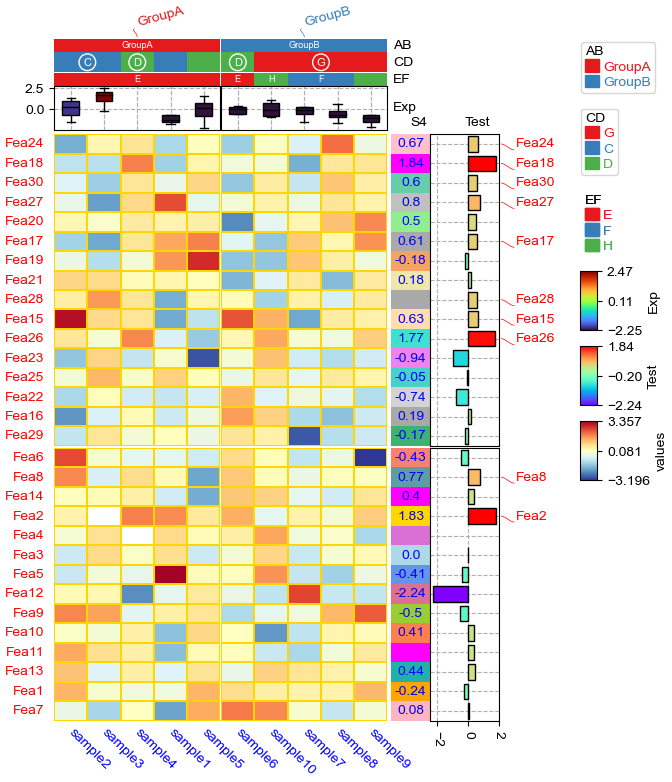

[1]:
import os,sys
%matplotlib inline
import matplotlib.pylab as plt
import pickle
plt.rcParams['figure.dpi'] = 100
plt.rcParams['savefig.dpi']=300
# sys.path.append(os.path.expanduser("~/Projects/Github/PyComplexHeatmap"))
from PyComplexHeatmap import *
[2]:
#set font to Arial using the following code
plt.rcParams['font.family']='sans serif'
plt.rcParams['font.sans-serif']='Arial'
# set pdf.fonttype to 42
plt.rcParams['pdf.fonttype']=42
Generate dataset¶
[3]:
#Generate example dataset (random)
df = pd.DataFrame(['GroupA'] * 5 + ['GroupB'] * 5, columns=['AB'])
df['CD'] = ['C'] * 3 + ['D'] * 3 + ['G'] * 4
df['EF'] = ['E'] * 6 + ['F'] * 2 + ['H'] * 2
df['F'] = np.random.normal(0, 1, 10)
df.index = ['sample' + str(i) for i in range(1, df.shape[0] + 1)]
df_box = pd.DataFrame(np.random.randn(10, 4), columns=['Gene' + str(i) for i in range(1, 5)])
df_box.index = ['sample' + str(i) for i in range(1, df_box.shape[0] + 1)]
df_bar = pd.DataFrame(np.random.uniform(0, 10, (10, 2)), columns=['TMB1', 'TMB2'])
df_bar.index = ['sample' + str(i) for i in range(1, df_box.shape[0] + 1)]
df_scatter = pd.DataFrame(np.random.uniform(0, 10, 10), columns=['Scatter'])
df_scatter.index = ['sample' + str(i) for i in range(1, df_box.shape[0] + 1)]
df_heatmap = pd.DataFrame(np.random.randn(30, 10), columns=['sample' + str(i) for i in range(1, 11)])
df_heatmap.index = ["Fea" + str(i) for i in range(1, df_heatmap.shape[0] + 1)]
df_heatmap.iloc[1, 2] = np.nan
Add selected rows labels¶
[4]:
#Annotate the rows with average > 0.3
df_rows = df_heatmap.apply(lambda x:x.name if x.sample4 > 0.5 else None,axis=1)
df_rows=df_rows.to_frame(name='Selected')
df_rows['XY']=df_rows.index.to_series().apply(lambda x:'A' if int(x.replace('Fea',''))>=15 else 'B')
row_ha = HeatmapAnnotation(
Scatter=anno_scatterplot(df_heatmap.sample4.apply(lambda x:round(x,2)),
height=12,cmap='jet',legend=False),
Bar=anno_barplot(df_heatmap.sample4.apply(lambda x:round(x,2)),
height=15,cmap='rainbow',legend=False),
selected=anno_label(df_rows,colors='red',relpos=(-0.05,0.4)),
label_kws={'rotation':30,'horizontalalignment':'left','verticalalignment':'bottom'},
axis=0,verbose=0)
col_ha = HeatmapAnnotation(label=anno_label(df.AB, merge=True,rotation=10),
AB=anno_simple(df.AB,add_text=True),axis=1,
CD=anno_simple(df.CD,add_text=True),
EF=anno_simple(df.EF,add_text=True,
legend_kws={'frameon':True}),
G=anno_boxplot(df_box, cmap='jet',legend=False),
verbose=0)
plt.figure(figsize=(5.5, 6.5))
cm = ClusterMapPlotter(data=df_heatmap, top_annotation=col_ha,right_annotation=row_ha,
col_cluster=True,row_cluster=True,
col_split=df.AB,row_split=2,
col_split_gap=0.5,row_split_gap=0.8,
label='values',row_dendrogram=True,
show_rownames=False,show_colnames=True,
tree_kws={'row_cmap': 'Set1'},verbose=0,legend_gap=5,
cmap='RdYlBu_r',xticklabels_kws={'labelrotation':-90,'labelcolor':'blue'})
plt.savefig("example0.pdf", bbox_inches='tight')
plt.show()
Estimated legend width: 16.258333333333333 mm

Add float annotations on the top of heatmap cells¶
[5]:
#Annotate the rows with average > 0.3
df_rows = df_heatmap.apply(lambda x:x.name if x.sample4 > 0.5 else None,axis=1)
df_rows=df_rows.to_frame(name='Selected')
df_rows['XY']=df_rows.index.to_series().apply(lambda x:'A' if int(x.replace('Fea',''))>=15 else 'B')
row_ha = HeatmapAnnotation(S4=anno_simple(df_heatmap.sample4.apply(lambda x:round(x,2)),
add_text=True,height=10,
text_kws={'rotation':0,'fontsize':10,'color':'black'}),
# Scatter=anno_scatterplot(df_heatmap.sample4.apply(lambda x:round(x,2)),
# height=10),
Test=anno_barplot(df_heatmap.sample4.apply(lambda x:round(x,2)),
height=18,cmap='rainbow'),
selected=anno_label(df_rows,colors='red'),
axis=0,verbose=0,label_kws={'rotation':0,'horizontalalignment':'left','verticalalignment':'bottom'})
col_ha = HeatmapAnnotation(label=anno_label(df.AB, merge=True,rotation=15),
AB=anno_simple(df.AB,add_text=True),axis=1,
CD=anno_simple(df.CD,add_text=True),
EF=anno_simple(df.EF,add_text=True,
legend_kws={'frameon':False}),
Exp=anno_boxplot(df_box, cmap='turbo'),
verbose=0) #verbose=0 will turn off the log.
print(df)
print(df_box.mean(axis=1))
print(df_heatmap)
plt.figure(figsize=(6, 8))
cm = ClusterMapPlotter(data=df_heatmap, top_annotation=col_ha,right_annotation=row_ha,
col_split=df.AB,
row_split=df_rows.XY, col_split_gap=0.5,row_split_gap=1,
col_cluster=True,row_cluster=True,
label='values',row_dendrogram=False,show_rownames=True,show_colnames=True,
tree_kws={'row_cmap': 'Set1'},verbose=0,legend_gap=7,
annot=True,linewidths=0.05,linecolor='gold',cmap='RdYlBu_r',
xticklabels_kws={'labelrotation':-45,'labelcolor':'blue'})
plt.show()
print(cm.row_order)
print(cm.col_order)
AB CD EF F
sample1 GroupA C E -1.237721
sample2 GroupA C E 1.616244
sample3 GroupA C E -1.258170
sample4 GroupA D E 0.605460
sample5 GroupA D E 0.775571
sample6 GroupB D E -0.068307
sample7 GroupB G F 0.355112
sample8 GroupB G F -0.423276
sample9 GroupB G H 0.493730
sample10 GroupB G H -1.332941
sample1 -1.158157
sample2 -0.177446
sample3 -0.007312
sample4 0.317043
sample5 0.551470
sample6 -0.405050
sample7 -0.566055
sample8 -0.004657
sample9 0.205039
sample10 0.741288
dtype: float64
sample1 sample2 sample3 sample4 sample5 sample6 sample7 \
Fea1 -1.744219 -0.036039 -2.004938 1.226799 -1.985827 -1.836150 0.276584
Fea2 1.420698 -0.321150 NaN 0.697960 0.202385 1.249342 -0.994730
Fea3 1.009702 -1.490259 0.014467 -0.996508 1.417925 0.838245 -0.408265
Fea4 -1.607622 2.227192 1.099229 0.587473 -0.825314 1.067807 1.131514
Fea5 1.828212 -1.311932 -0.247538 -1.869757 0.256305 -0.065565 -1.680266
Fea6 -0.564971 -0.832220 1.213726 0.884573 -0.854314 1.566632 1.951777
Fea7 -0.583377 -1.252784 -1.298505 1.049436 0.710685 -0.802466 1.874198
Fea8 0.665834 0.999353 -0.667384 -0.486368 0.465535 1.413054 -1.548926
Fea9 1.918896 -1.262205 -2.086159 -1.059228 -0.947294 -0.321734 1.332119
Fea10 1.257325 0.076168 0.331812 -0.612932 -0.952014 -0.645937 -1.560663
Fea11 0.002020 0.411942 -2.307433 -0.253653 0.517688 -0.464056 -0.442025
Fea12 1.183296 0.814578 -1.711553 1.278286 0.968354 1.114656 0.874683
Fea13 -0.194720 0.191911 0.572482 0.218231 0.587668 -0.881331 0.258951
Fea14 -0.082784 1.338572 0.028354 -1.542481 0.901477 1.858731 -0.410559
Fea15 -1.198262 2.128013 -1.224540 -0.158869 -1.043334 -1.079969 -0.257126
Fea16 0.271820 1.513061 0.321602 -0.494734 -1.295167 0.208782 -0.214062
Fea17 -2.687282 -0.623869 -0.585143 -0.860223 -1.049672 -1.624363 0.803911
Fea18 1.064406 0.280917 3.016924 0.093050 0.268218 -2.137558 1.798230
Fea19 -0.797130 0.529163 -0.803214 -0.843564 -2.025758 0.332979 -0.993683
Fea20 1.110150 0.225019 0.208167 -1.386928 -0.961548 2.016059 0.250885
Fea21 -1.257247 1.827129 -0.691127 -0.873857 1.629516 0.129941 0.788495
Fea22 0.657084 0.482906 0.083039 -1.945415 -1.025050 0.430309 0.711691
Fea23 0.396162 -0.283245 0.861367 -0.244994 -0.331806 -0.438584 -0.708659
Fea24 -1.449479 -0.302440 2.337422 -0.205821 -0.054287 -0.071450 0.698100
Fea25 2.196286 1.030933 0.989918 -0.455429 -2.232631 -0.544994 0.706620
Fea26 -0.345663 -0.029416 -0.347321 -0.227618 -0.748045 0.381943 -1.336021
Fea27 0.689751 -0.674049 -0.871053 0.518734 1.377229 1.356040 -0.549625
Fea28 -0.337864 -0.331369 0.152389 -0.652720 -0.730743 0.438291 -0.183544
Fea29 0.300110 -0.286339 1.222650 0.880184 -0.834270 -0.274620 1.617929
Fea30 0.753779 -0.123485 0.543059 1.229428 0.563521 -0.286203 -1.350431
sample8 sample9 sample10
Fea1 -1.991377 -1.697172 0.233692
Fea2 0.369071 -1.392757 -1.505512
Fea3 0.098774 1.072953 -0.774008
Fea4 -1.901494 2.415070 0.055539
Fea5 0.325411 -0.886045 -0.265376
Fea6 1.414110 -1.334251 -0.046644
Fea7 0.826181 0.951489 1.100119
Fea8 -0.370544 -0.885959 -1.193763
Fea9 1.019810 0.906437 -1.160583
Fea10 -1.258429 1.530051 0.525615
Fea11 -0.799827 0.750702 -0.936007
Fea12 0.002193 -0.993623 0.780779
Fea13 -0.823248 -0.243442 -0.107993
Fea14 -0.300391 -0.391776 -1.508426
Fea15 -0.375083 -1.021302 0.748442
Fea16 -1.068431 2.110248 -0.516394
Fea17 -1.018607 -1.164631 -1.970253
Fea18 0.238248 -1.208741 -0.913392
Fea19 -1.741106 0.994682 -0.444777
Fea20 0.716404 0.487228 -0.624059
Fea21 -0.776333 0.420321 -0.911161
Fea22 -0.714035 0.502988 -0.396866
Fea23 0.159116 0.022884 -1.376890
Fea24 -0.249752 -2.370155 0.379815
Fea25 0.901711 0.066038 0.580827
Fea26 -0.148973 0.144026 0.070329
Fea27 -0.993018 0.885509 -0.327853
Fea28 0.329000 -0.712551 0.367358
Fea29 -1.497489 -0.798221 0.449452
Fea30 0.680446 0.217150 0.302054
Estimated legend width: 16.258333333333333 mm

[['Fea13', 'Fea4', 'Fea10', 'Fea3', 'Fea5', 'Fea2', 'Fea8', 'Fea14', 'Fea6', 'Fea9', 'Fea11', 'Fea7', 'Fea1', 'Fea12'], ['Fea29', 'Fea18', 'Fea24', 'Fea15', 'Fea17', 'Fea21', 'Fea26', 'Fea16', 'Fea19', 'Fea28', 'Fea25', 'Fea20', 'Fea22', 'Fea27', 'Fea23', 'Fea30']]
[['sample1', 'sample5', 'sample4', 'sample2', 'sample3'], ['sample7', 'sample10', 'sample9', 'sample6', 'sample8']]
Only plot the annotations¶
[6]:
df = pd.DataFrame(['AAAA1'] * 5 + ['BBBBB2'] * 5, columns=['AB'])
df['CD'] = ['C'] * 3 + ['D'] * 3 + ['G'] * 4
df['F'] = np.random.normal(0, 1, 10)
df.index = ['sample' + str(i) for i in range(1, df.shape[0] + 1)]
df_box = pd.DataFrame(np.random.randn(10, 4), columns=['Gene' + str(i) for i in range(1, 5)])
df_box.index = ['sample' + str(i) for i in range(1, df_box.shape[0] + 1)]
df_bar = pd.DataFrame(np.random.uniform(0, 10, (10, 2)), columns=['TMB1', 'TMB2'])
df_bar.index = ['sample' + str(i) for i in range(1, df_box.shape[0] + 1)]
df_scatter = pd.DataFrame(np.random.uniform(0, 10, 10), columns=['Scatter'])
df_scatter.index = ['sample' + str(i) for i in range(1, df_box.shape[0] + 1)]
df_bar1 = pd.DataFrame(np.random.uniform(0, 10, (10, 2)), columns=['T1-A', 'T1-B'])
df_bar1.index = ['sample' + str(i) for i in range(1, df_box.shape[0] + 1)]
df_bar2 = pd.DataFrame(np.random.uniform(0, 10, (10, 2)), columns=['T2-A', 'T2-B'])
df_bar2.index = ['sample' + str(i) for i in range(1, df_box.shape[0] + 1)]
df_bar3 = pd.DataFrame(np.random.uniform(0, 10, (10, 2)), columns=['T3-A', 'T3-B'])
df_bar3.index = ['sample' + str(i) for i in range(1, df_box.shape[0] + 1)]
df_bar3.iloc[5,0]=np.nan
df_bar4 = pd.DataFrame(np.random.uniform(0, 10, (10, 1)), columns=['T4'])
df_bar4.index = ['sample' + str(i) for i in range(1, df_box.shape[0] + 1)]
df_bar4.iloc[7,0]=np.nan
print(df)
print(df_box)
print(df_scatter)
print(df_bar)
print(df_bar1)
print(df_bar2)
print(df_bar3)
print(df_bar4)
AB CD F
sample1 AAAA1 C 1.031303
sample2 AAAA1 C 0.293598
sample3 AAAA1 C -1.355748
sample4 AAAA1 D -0.759029
sample5 AAAA1 D 0.314025
sample6 BBBBB2 D -1.499914
sample7 BBBBB2 G -0.677191
sample8 BBBBB2 G -0.587074
sample9 BBBBB2 G -0.610566
sample10 BBBBB2 G -0.766396
Gene1 Gene2 Gene3 Gene4
sample1 1.011262 1.071949 -0.933521 0.669437
sample2 1.947088 0.488267 1.111069 -0.619809
sample3 -0.997772 -0.508266 0.962136 1.584098
sample4 0.330530 0.462836 -0.934982 -0.068907
sample5 0.705138 -0.775728 -0.287939 0.184348
sample6 0.971759 0.189396 0.250673 0.330774
sample7 1.065352 -0.254268 -0.258029 1.134431
sample8 -0.747436 -0.130045 -1.833788 -0.299179
sample9 -0.687000 -0.363633 0.714356 1.271397
sample10 -0.187923 -0.548144 1.228743 -0.742795
Scatter
sample1 5.744200
sample2 2.579638
sample3 7.211013
sample4 4.501165
sample5 3.920983
sample6 8.986545
sample7 8.607990
sample8 6.677621
sample9 2.284410
sample10 9.112307
TMB1 TMB2
sample1 8.445163 3.453418
sample2 8.909010 9.847141
sample3 8.981405 0.081847
sample4 7.534048 1.585130
sample5 0.326525 5.946017
sample6 8.824681 4.003034
sample7 3.965425 5.415887
sample8 6.569604 2.983409
sample9 1.466312 9.480242
sample10 6.843893 5.001696
T1-A T1-B
sample1 8.548451 3.506500
sample2 0.125333 1.473832
sample3 4.837953 5.112690
sample4 4.196156 5.525615
sample5 9.897740 1.624072
sample6 5.634391 1.425920
sample7 7.676792 4.264159
sample8 5.935728 3.911183
sample9 6.009959 5.615676
sample10 0.969375 2.384723
T2-A T2-B
sample1 2.413462 9.701841
sample2 8.973960 5.557239
sample3 0.568696 9.980430
sample4 3.953647 0.341543
sample5 4.341120 5.388381
sample6 5.613918 4.595489
sample7 5.252112 9.157291
sample8 5.644693 3.230703
sample9 9.227212 1.556895
sample10 2.376448 0.583118
T3-A T3-B
sample1 1.254736 6.833858
sample2 3.031483 1.895457
sample3 4.509020 7.310411
sample4 2.143379 3.892560
sample5 1.146218 6.206335
sample6 NaN 1.698292
sample7 3.405604 9.519133
sample8 6.898752 1.508417
sample9 7.241688 5.332481
sample10 7.153990 3.921316
T4
sample1 4.354846
sample2 4.953556
sample3 5.278140
sample4 6.878527
sample5 7.624043
sample6 5.647294
sample7 5.457905
sample8 NaN
sample9 1.210640
sample10 3.989159
[7]:
plt.figure(figsize=(4, 8))
col_ha = HeatmapAnnotation(label=anno_label(df.AB, merge=True,rotation=15),
AB=anno_simple(df.AB,add_text=True,legend=True), axis=1,
CD=anno_simple(df.CD, add_text=True,legend=True,text_kws={'color':'black'}),
Exp=anno_boxplot(df_box, cmap='turbo',legend=True),
Scatter=anno_scatterplot(df_scatter),
TMB_bar=anno_barplot(df_bar,legend=True,cmap='Set1'),
Bar1=anno_barplot(df_bar1,legend=True,cmap='Dark2'),
Bar4=anno_barplot(df_bar4,legend=True,cmap='turbo'),
Bar2=anno_barplot(df_bar2,legend=True,cmap='tab10'),
Bar3=anno_barplot(df_bar3,legend=True,cmap='Paired'),
plot=True,legend=True,legend_gap=5,hgap=0.5)
col_ha.show_ticklabels(df.index.tolist(),fontdict={'color':'blue'},rotation=-30)
plt.show()
Starting plotting HeatmapAnnotations
Collecting annotation legends..

Change orentation down and add extra space¶
[8]:
plt.figure(figsize=(4, 8))
row_ha = HeatmapAnnotation(
TMB_bar=anno_barplot(df_bar,legend=True,cmap='Set1'),
Bar1=anno_barplot(df_bar1,legend=True,cmap='Dark2'),
Bar4=anno_barplot(df_bar4,legend=True,cmap='turbo'),
Bar2=anno_barplot(df_bar2,legend=True,cmap='tab10'),
Bar3=anno_barplot(df_bar3,legend=True,cmap='Paired'),
Scatter=anno_scatterplot(df_scatter),
Exp=anno_boxplot(df_box, cmap='turbo',legend=True),
CD=anno_simple(df.CD, colors={'C': 'red', 'D': 'gray', 'G': 'yellow'},
add_text=True,legend=True,text_kws={'color':'black'}),
AB=anno_simple(df.AB,add_text=True,legend=True),
label=anno_label(df.AB, merge=True,rotation=-15),
plot=True,plot_legend=False,legend_hpad=13,axis=1,hgap=1
)
row_ha.show_ticklabels(df.index.tolist(),fontdict={'color':'blue'},rotation=30)
plt.show()
# Here, we can use hgap (when axis=1) or wgap (when axis=0) to control the widh of height space between different annotations.
Starting plotting HeatmapAnnotations

Change orentation to the left¶
[9]:
plt.figure(figsize=(8, 4))
row_ha = HeatmapAnnotation(label=anno_label(df.AB, merge=True,rotation=15),
AB=anno_simple(df.AB,add_text=True,legend=True),
CD=anno_simple(df.CD,add_text=True,legend=True),
Exp=anno_boxplot(df_box, cmap='turbo',legend=True),
Scatter=anno_scatterplot(df_scatter),
TMB_bar=anno_barplot(df_bar,legend=True,cmap='Set1'),
Bar1=anno_barplot(df_bar1,legend=True,cmap='Dark2'),
Bar4=anno_barplot(df_bar4,legend=True,cmap='turbo'),
Bar2=anno_barplot(df_bar2,legend=True,cmap='tab10'),
Bar3=anno_barplot(df_bar3,legend=True,cmap='Paired'),
plot=True,legend=True,legend_gap=5,
axis=0,legend_hpad=20
)
row_ha.show_ticklabels(df.index.tolist(),fontdict={'color':'blue'},rotation=0)
plt.show()
Starting plotting HeatmapAnnotations
Collecting annotation legends..
Incresing ncol
Incresing ncol
Incresing ncol
More than 3 cols is not supported
Legend too long, generating a new column..

Change orentation to the right¶
[10]:
plt.figure(figsize=(8, 4))
row_ha = HeatmapAnnotation(
TMB_bar=anno_barplot(df_bar,legend=True,cmap='Set1'),
Bar1=anno_barplot(df_bar1,legend=True,cmap='Dark2'),
Bar4=anno_barplot(df_bar4,legend=True,cmap='turbo'),
Bar2=anno_barplot(df_bar2,legend=True,cmap='tab10'),
Bar3=anno_barplot(df_bar3,legend=True,cmap='Paired'),
Scatter=anno_scatterplot(df_scatter),
Exp=anno_boxplot(df_box, cmap='turbo',legend=True),
CD=anno_simple(df.CD, colors={'C': 'red', 'D': 'gray', 'G': 'green'},
add_text=True,legend=True,text_kws={'rotation':-90}),
AB=anno_simple(df.AB,add_text=True,legend=True,text_kws={'rotation':-90,'color':'black'}),
label=anno_label(df.AB, merge=True,rotation=15),
plot=True,legend=True,legend_hpad=13,legend_gap=5,axis=0
)
row_ha.show_ticklabels(df.index.tolist(),fontdict={'color':'black'},rotation=0)
plt.show()
Starting plotting HeatmapAnnotations
Collecting annotation legends..
Incresing ncol
Incresing ncol
Incresing ncol
More than 3 cols is not supported
Legend too long, generating a new column..

Changing orientation using parameter orientation¶
By Default, if there is no anno_label in the annotation, the oriention would be determined by parameter orientation.
[11]:
plt.figure(figsize=(8, 4))
col_ha = HeatmapAnnotation(
AB=anno_simple(df.AB,add_text=True,legend=True),
CD=anno_simple(df.CD,add_text=True,legend=True),
Exp=anno_boxplot(df_box, cmap='turbo',legend=True),
Scatter=anno_scatterplot(df_scatter),
TMB_bar=anno_barplot(df_bar,legend=True,cmap='Set1'),
Bar1=anno_barplot(df_bar1,legend=True,cmap='Dark2'),
Bar4=anno_barplot(df_bar4,legend=True,cmap='turbo'),
Bar2=anno_barplot(df_bar2,legend=True,cmap='tab10'),
Bar3=anno_barplot(df_bar3,legend=True,cmap='Paired'),
plot=True,legend=True,axis=0,
legend_gap=5,orientation='left',
)
plt.show()
Starting plotting HeatmapAnnotations
Collecting annotation legends..
Incresing ncol
Incresing ncol
Incresing ncol
More than 3 cols is not supported
Legend too long, generating a new column..

[12]:
plt.figure(figsize=(8, 4))
col_ha = HeatmapAnnotation(
AB=anno_simple(df.AB,add_text=True,legend=True,
text_kws={'rotation':-90,'fontsize':14,'color':'black'}),
CD=anno_simple(df.CD,add_text=True,legend=True,
text_kws={'rotation':-90,'fontsize':14,'color':'white'}),
Exp=anno_boxplot(df_box, cmap='turbo',legend=True),
Scatter=anno_scatterplot(df_scatter),
TMB_bar=anno_barplot(df_bar,legend=True,cmap='Set1'),
Bar1=anno_barplot(df_bar1,legend=True,cmap='Dark2'),
Bar4=anno_barplot(df_bar4,legend=True,cmap='turbo'),
Bar2=anno_barplot(df_bar2,legend=True,cmap='tab10'),
Bar3=anno_barplot(df_bar3,legend=True,cmap='Paired'),
plot=True,legend=True,axis=0,wgap=3,
legend_gap=5,orientation='right',
)
plt.show()
Starting plotting HeatmapAnnotations
Collecting annotation legends..
Incresing ncol
Incresing ncol
Incresing ncol
More than 3 cols is not supported
Legend too long, generating a new column..

Add multiple heatmap annotations using for loop¶
Typically, we can create a heatmap annotatin using the following code:
col_ha = HeatmapAnnotation(
Group=anno_simple(df_cols.hypomethylated_samples,colors=sample_group_color_dict,legend=True),
CellType=anno_simple(df_cols.CellType,colors=ct_color_dict,legend=ct_legend),
M1=anno_simple(df_cols['M1'],cmap='jet',legend=lgd,vmax=1,vmin=0,legend_kws={'label':'M1'}),
verbose=0,label_side='right',label_kws={'horizontalalignment':'left'})
But what if we have many annotations, for example:
col_ha = HeatmapAnnotation(
Group=anno_simple(df_cols.hypomethylated_samples,colors=sample_group_color_dict,legend=True),
CellType=anno_simple(df_cols.CellType,colors=ct_color_dict,legend=ct_legend),
M1=anno_simple(df_cols['M1'],cmap='jet',legend=lgd,vmax=1,vmin=0,legend_kws={'label':'M1'}),
M2=anno_simple(df_cols['M2'],cmap='jet',legend=lgd,vmax=1,vmin=0,legend_kws={'label':'M2'}),
M3=anno_simple(df_cols['M3'],cmap='jet',legend=lgd,vmax=1,vmin=0,legend_kws={'label':'M3'}),
.....
verbose=0,label_side='right',label_kws={'horizontalalignment':'left'})
In this case, we can create an dict including the name and annotation as keys and values:
col_ha_dict={
'Group':anno_simple(df_cols.hypomethylated_samples,colors=sample_group_color_dict,legend=True),
'CellType':anno_simple(df_cols.CellType,colors=ct_color_dict,legend=ct_legend)
}
for col in sample_cols:
col_ha_dict[col]=anno_simple(df_cols[col],cmap='jet',legend=lgd,vmax=1,vmin=0,legend_kws={'label':col})
col_ha = HeatmapAnnotation(**col_ha_dict,
verbose=0,label_side='right',label_kws={'horizontalalignment':'left'})